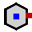
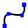

การปรับแก้เรขาคณิต
ใน TecZone คุณมีตัวแก้ไขสเก็ตช์ 2D ที่ทรงพลังสำหรับการปรับแก้ ล้างค่า หรือเพิ่ม เรขาคณิตของคุณ ใช้ปุ่มลัด S เพื่อเข้าสู่โหมดสเก็ตช์ ตัวแก้ไข จะแสดงชิ้นงานในมุมมองคลี่ออก

ในมุมมองคลี่ออก คลิกที่ไอคอน ล้างข้อมูล  หรือกด
ปุ่มลัด S
หรือกด
ปุ่มลัด S
เมนูจะเปิดขึ้นพร้อมไอคอนต่างๆ สำหรับการประมวลผลการคลี่ออก:

แผงสเก็ตช์
| ไอคอน | สัญลักษณ์ | ความหมาย |
|---|---|---|
|
เลือก |
เลือกวัตถุ เส้น รายการ และอื่นๆ |
|
เส้นตรง |
วาดเส้น |
|
เส้นตรงที่เชื่อมต่อกัน |
วาดเส้นหลายเส้น |
|
เส้นขนาน |
วาดเส้นขนานกับเส้น |
|
Normal |
วาดเส้นสัมผัสเส้นโค้ง |
|
เส้นโค้ง |
วาดเส้นตั้งฉากกับเส้น |
|
จุดกกึ่งกลางเส้นโค้ง |
วาดเส้นดัด |
|
เส้นโค้งวงกลม 2 จุด |
วาดส่วนโค้งจากจุดกึ่งกลาง จุดเริ่มต้น และจุดสิ้นสุด |
|
เส้นโค้งวงกลม 3 จุด |
วาดส่วนโค้งวงกลมผ่านสองจุดที่กำหนด (จุดเริ่มต้นและจุดสิ้นสุด) |
|
เส้นสัมผัสที่เส้นโค้งวงกลม |
วาดส่วนโค้งที่สัมผัสกับองค์ประกอบของสเก็ตช์ |
|
สี่เหลี่ยมผืนผ้า |
วาดสี่เหลี่ยมผืนผ้า |
|
จุดกึ่งกลางสี่เหลี่ยมผืนผ้า |
วาดสี่เหลี่ยมผืนผ้าจากจุดกึ่งกลาง |
|
วงกลม |
วาดวงกลม เลือกจุดกึ่งกลางของวงกลมแล้วลากเคอร์เซอร์เพื่อกำหนด รัศมี หรือป้อนค่ารัศมี |
|
เส้นรอบวง 2 จุด |
วาดวงกลมตามเส้นรอบวง เลือกจุดบน เส้นรอบวง แล้วเลือกจุดที่สองและจุดที่สาม |
|
เส้นรอบวง 3 จุด |
วาดวงกลมตามเส้นรอบวง เลือกจุดบน เส้นรอบวง แล้วเลือกจุดที่สองและจุดที่สาม |
วงกลมโดยมีเส้นสัมผัสวงกลม 2 เส้น |
วาดวงกลมที่มีเส้นสัมผัสสองเส้น ป้อนเส้นผ่านศูนย์กลางของวงกลม แล้วเลือกเส้นสัมผัสเส้นแรกและเส้นสัมผัสเส้นที่สอง |
|
|
วงกลมโดยมีเส้นสัมผัสวงกลม 3 เส้น |
วาดวงกลมที่มีเส้นสัมผัสสามเส้น ป้อนเส้นผ่านศูนย์กลางของวงกลม แล้วเลือกเส้นสัมผัสเส้นแรก เส้นสัมผัสเส้นที่สอง และเส้นสัมผัสเส้นที่สาม |
จุดกึ่งกลางรูปหลายเหลี่ยม - จุดที่เป็นมุม |
วาดวงกลมที่มีเส้นสัมผัสสามเส้น ป้อนเส้นผ่านศูนย์กลางของวงกลม แล้วเลือกเส้นสัมผัสเส้นแรก เส้นสัมผัสเส้นที่สอง และเส้นสัมผัสเส้นที่สาม |
|
 |
จุดกึ่งกลางรูปหลายเหลี่ยม - กึ่งกลางขอบด้านข้าง |
วาดรูปหลายเหลี่ยม ระบุจำนวนด้านและเลือกจุดกึ่งกลาง และกึ่งกลางของด้านหนึ่ง |
|
รูปหลายเหลี่ยมพร้อมขอบด้านข้าง |
วาดรูปหลายเหลี่ยม ระบุจำนวนด้านและกำหนดจุดเริ่มต้น และจุดสิ้นสุดของด้าน |
|
ทรงกลม |
ลบมุมที่จุดตัดขององค์ประกอบสเก็ตช์สองเส้นด้วยค่ารัศมีที่ป้อน ซึ่งทำให้เกิดส่วนโค้งสัมผัส |
|
ทรงรี |
สร้างมุมเอียงที่มุมตัดขององค์ประกอบสเก็ตช์สองเส้น |
|
ทรงกลมมุมตัด |
ตัดแต่งมุมที่มุมตัดขององค์ประกอบสเก็ตช์สองเส้นด้วยค่ารัศมีที่ป้อน |
|
สี่เหลี่ยมมุมตัด |
ตัดแต่งมุมที่มุมตัดขององค์ประกอบสเก็ตช์สองเส้นด้วยสี่เหลี่ยมผืนผ้า สามารถ ป้อนขนาดของสี่เหลี่ยมล่วงหน้าได้ |
|
สี่เหลี่ยมหน้าตัดไม่จำกัดรูปทรง |
สร้าง Free Cut รูปสี่เหลี่ยมผืนผ้า ต้องป้อนระยะมุมและความลึกของ Free Cut แล้วเลือกมุม |
|
ช่องยาวหน้าตัดไม่จำกัดรูปทรง |
สร้าง Free Cut รูปรูเจาะยาวรี ต้องป้อนระยะมุม, ความกว้าง Free Cut, ความลึก Free Cut แล้วเลือกมุม |
|
สามเหลี่ยมหน้าตัดไม่จำกัดรูปทรง |
สร้าง Free Cut รูปสามเหลี่ยม ต้องป้อนระยะมุม, ความกว้าง Free Cut, ความลึก Free Cut แล้วเลือกมุม |
|
ช่องกุญแจ |
สร้าง Keyhole ในวงกลมตามค่าที่ป้อน |
|
ทรงกลมแบบเต็ม 3 ส่วน |
ลบมุมของ Sketch Elements ที่เชื่อมต่อกันสามจุด |
|
ขยายความยาวองค์ประกอบ |
เลือก Sketch Element ที่ต้องการขยาย |
|
ตัดขอบองค์ประกอบ |
เลือก Sketch Element ที่ต้องการตัด |
|
ละลายรวม |
ใช้เพื่อตัดและเชื่อม Polyline หลายเส้นแยกกันให้เป็นเส้นเดียว |
|
ออฟเซ็ตองค์ประกอบ |
Offset Sketch Element อย่างน้อยหนึ่งรายการ, ขอบโมเดลที่ Sketch หรือพื้นผิวโมเดลตามระยะที่กำหนด |
|
เลื่อน |
เลือก Sketch Element โดยเลือก ctrl จุดอ้างอิง และย้าย Sketch Element |
|
หมุน |
เลือก Sketch Element โดยเลือก ctrl จุดศูนย์กลางการหมุน แล้วกำหนดจุดเริ่มและจุดสิ้นสุดเพื่อหมุน Sketch Element |
การปรับขนาด |
เลือก Sketch Element โดยเลือก ctrl จุดฐาน จากนั้นกำหนดจุดอ้างอิงเริ่ม และจุดสิ้นสุดเพื่อปรับขนาด Sketch Element |
|
|
การสะท้อน |
เลือก Sketch Element โดยกำหนด ctrl เส้นกระจกเริ่มต้น และสิ้นสุดเพื่อสร้างการสะท้อน Sketch Element |
|
รูปแบบเชิงเส้น |
ใช้ Linear Pattern เพื่อสร้างสำเนาอ้างอิงหลายชุดของ Sketch Element อย่างน้อยหนึ่งรายการ ที่จัดวางห่างกันเท่าๆ กันตามเส้นตรงหนึ่งหรือสองเส้น คลิก Linear Pattern แล้วป้อนค่าที่ต้องการ |
|
รูปแบบวงกลม |
ใช้ Circular Pattern เพื่อสร้างสำเนาอ้างอิงหลายชุดของ Sketch Element อย่างน้อยหนึ่งรายการ ที่จัดวางห่างกันเท่าๆ กันรอบแกน คลิก Circular Pattern แล้วป้อนค่าที่ต้องการ |
|
การผสานรวมพื้นที่ |
เลือก Sketch Elements แบบปิดสองชุดหรือมากกว่าเพื่อรวมพื้นผิวเข้าด้วยกัน |
|
พื้นที่หน้าตัด |
เลือก Sketch Elements แบบปิดสองชุดหรือมากกว่าเพื่อสร้างพื้นที่ตัดของ Elements ที่เลือก |
ตัดขอบพื้นที่ |
เลือก Sketch Elements แบบปิดสองชุดหรือมากกว่าเพื่อตัดพื้นผิว |
|
|
คัดลอกหน้าตัดแบบไม่จำกัดรูปทรง |
ใช้เพื่อสร้างสำเนาหลายชุดของ Notch ตามขอบ อันดับแรก ให้ป้อนระยะห่างระหว่างสำเนากับจำนวนสำเนาของ Notch ที่ต้องการสร้าง จากนั้น ให้เลือก Notch โดยคลิกที่เส้นสองเส้น ที่อยู่ติดกับ Notch |
|
ลบหน้าตัดแบบไม่จำกัดรูปทรง |
คุณสามารถลบ Notch ที่มุมหรือบนเส้นตรงโดยใช้เครื่องมือนี้ คลิก เส้นสองเส้นที่อยู่ติดกับ Notch และ Notch จะถูกลบ |
|
สะท้อนหน้าตัดแบบไม่จำกัดรูปทรง |
คุณสามารถสะท้อน Notch ที่มุมหรือบนเส้นตรงโดยใช้เครื่องมือนี้้ คลิก เส้นสองเส้นที่อยู่ติดกับ Notch และ Notch จะถูกสะท้อน |
 |
เส้นโค้ง |
สำหรับการเริ่มสร้าง Spline ใหม่ ให้คลิกที่จุดเริ่มต้น และเมื่อคลิกที่ จุดถัดๆ ไป Spline จะถูกสร้างขึ้น หากต้องการปิด Spline ให้กดปุ่ม ALT แล้วคลิก |
|
โปรไฟล์ |
พิมพ์ค่าความยาวฐาน, ความสูง Flange, ความหนา, มุม Flange, รัศมีด้านใน แล้วกด Enter เพื่อสร้างโปรไฟล์ |
ข้อความ |
ใช้สำหรับวาดข้อความที่จะถูกมาร์กลงบนชิ้นงานโดยเครื่องเลเซอร์ เมื่อคลิก ปุ่มเครื่องมือนี้ แถบป้อนข้อมูลจะแสดงช่องสำหรับป้อนข้อความ ขนาด และมุมการหมุน |
|
|
ข้อความ |
ใช้สำหรับแปลงรูปทรงของอักขระจากฟอนต์ TrueType เป็น Polyline สามารถใช้ Laser Tooling กับ Polyline นี้ได้ และสามารถตัดได้ เมื่อคลิกปุ่มนี้ครั้งแรก หน้าต่าง Font ปรากฏขึ้น เพื่อเลือกฟอนต์ ที่จะใช้สำหรับข้อความ |
|
รูปแบบมาตรฐาน |
ใช้สร้างรูปทรงทั่วไปหลายแบบแล้วแทรกลงใน Drawing เมื่อคลิก ปุ่มนี้ หน้าต่าง Make Shape จะปรากฏขึ้นเพื่อให้เลือก จากรายการรูปทรงทั่วไปที่มี |
|
การกำหนดขนาดแบบง่าย |
เลือกจุดวัดมิติแรก จากนั้นเลือกจุดวัดมิติที่สอง และกำหนดตำแหน่ง เส้น Dimensioning |
|
การกำหนดขนาดรูปทรง |
เลือกจุดวัดมิติแรก จากนั้นเลือกจุดวัดมิติที่สอง และกำหนดตำแหน่ง เส้น Dimensioning |
ลักษณะการกำหนดขนาด |
เลือกจุดวัดมิติแรก จากนั้นเลือกจุดวัดมิติที่สอง และกำหนดตำแหน่ง เส้น Dimensioning แล้วเลือกจุดวัดมิติถัดไป |
|
|
การวัดค่าแนวนอน |
Ordinate dimensions คือการบอกขนาดที่วัดจากจุดอ้างอิงศูนย์ บนแบบ เลือกจุดอ้างอิง แล้วกำหนดตำแหน่งการบอกขนาด |
|
การวัดค่าแนวตั้ง |
Ordinate dimensions คือการบอกขนาดที่วัดจากจุดอ้างอิงศูนย์ บนแบบ เลือกจุดอ้างอิง แล้วกำหนดตำแหน่งการบอกขนาด |
|
การวัดค่ามุม |
สร้างการบอกขนาดสำหรับมุม เลือกเส้นแรก แล้วเลือกเส้นที่สองที่จะใช้วัดมุม |
|
การวัดค่ารัศมี |
สร้างการบอกขนาดสำหรับรัศมี เลือกวงกลมที่จะบอกขนาด รัศมี บอกขนาดเส้นผ่านศูนย์กลางด้วย ctrl |
|
การวัดค่ารัศมี โดยมีการกำหนดเส้นทึบ |
สร้างการบอกขนาดรัศมีแบบมีเส้น Leader ต่อเนื่อง เลือกวงกลม ที่จะบอกขนาดรัศมี บอกขนาดเส้นผ่านศูนย์กลางด้วย ctrl |
|
คำอธิบาย |
ใช้เพื่อเพิ่มบันทึกลงในแบบร่างในรูปของคำอธิบายประกอบ ในการสร้างคำอธิบายประกอบ ให้พิมพ์ข้อความที่จะแสดง คลิกเพื่อระบุว่าลูกศรควรชี้ไปที่ใด จากนั้นคลิกอีกครั้งเพื่อระบุว่าจะวางข้อความไว้ที่ใด |
|
วัดค่าเซ็กเม้นท์ |
ใช้เพื่อเพิ่มมิติให้กับเส้นตรงและส่วนโค้ง คลิกที่เซกเมนต์ ที่จะใส่มิติ แล้วคลิกอีกครั้งเพื่อกำหนดตำแหน่งมิติ หรือกด ค้างไว้ แล้วคลิกที่เซกเมนต์เพื่อกำหนดตำแหน่งมิติโดยอัตโนมัติ |